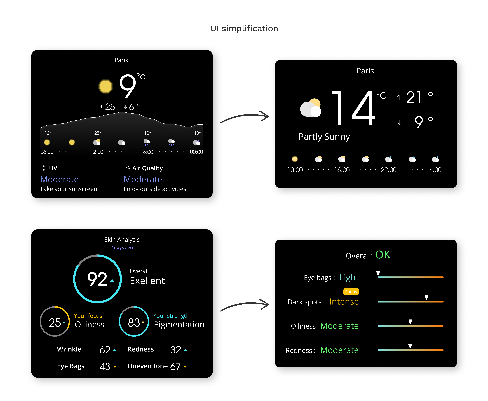

UX SOLUTION #5
Cleaner Mirror UI
Mirror reflections can make reading on-screen text surprisingly
tricky. Through iterative testing, I optimized font size,
contrast, and layout. I also reduced visual clutter by minimizing
how much info appears on one screen—keeping things clear, simple,
and fast to digest.

